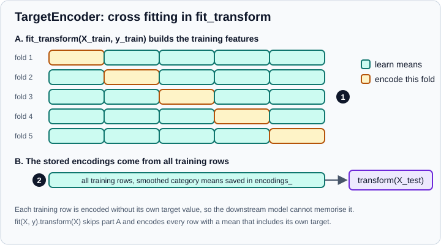

Encoding Categorical Features
|
This content was generated with the assistance of AI and should be verified against the official documentation before being relied on in production. |
This page targets scikit-learn 1.9 (1.9.1 at the time of writing) with NumPy 2.5 and pandas 3.1, and every example was run on Python 3.13.18, NumPy 2.5.4, pandas 3.1.0 and scikit-learn 1.9.1 in October 2026. Examples target Python 3.13 or 3.14. It covers the encoders in sklearn.preprocessing that turn categorical features into numbers: OneHotEncoder, OrdinalEncoder and TargetEncoder, plus LabelEncoder and LabelBinarizer, which are for targets.
Most scikit-learn estimators need numeric input. A column of strings such as "madrid" or "basic" carries no arithmetic meaning, so it must be mapped to numbers in a way that does not invent structure that is not there. How to do that depends on the kind of category, the number of distinct values (the cardinality) and the model. The concepts are introduced in Feature Engineering; scaling of numeric columns is on Scaling & Transforming Features, missing values on Imputing Missing Values, and combining encoders with numeric transformers on ColumnTransformer & Heterogeneous Data.
Kinds of categorical data
-
Nominal categories have no order (colour, city, browser). One-hot encoding is the safe default; target encoding is the alternative for many categories.
-
Ordinal categories have a meaningful order (small, medium, large; low, medium, high). An integer code in the right order can carry information a linear model uses.
-
Binary categories are a nominal feature with two values; one column is enough.
-
High-cardinality categories (zip code, product id, user id) have hundreds or thousands of values. One-hot encoding multiplies the number of columns and many categories are rare.
How the data arrives matters too. Since pandas 3 a string column has the default str dtype, which scikit-learn encoders accept without conversion, and pandas category and object columns work as well.
import pandas as pd
df = pd.DataFrame({"color": ["red", "green", "blue", "green", "red", "green"],
"size": ["S", "M", "L", "M", "S", "XL"]})
print(df.dtypes.to_dict())Output:
{'color': <StringDtype(na_value=nan)>, 'size': <StringDtype(na_value=nan)>}
OneHotEncoder
OneHotEncoder creates one binary column per category of each input column, with a 1 where the sample has that category.
import pandas as pd
from sklearn.preprocessing import OneHotEncoder
df = pd.DataFrame({"color": ["red", "green", "blue", "green", "red", "green"],
"size": ["S", "M", "L", "M", "S", "XL"]})
encoder = OneHotEncoder(sparse_output=False).fit(df)
print(encoder.categories_)
print(encoder.get_feature_names_out())
print(encoder.transform(df.iloc[:2]))
print(type(OneHotEncoder().fit_transform(df)).__name__) # the default output is a sparse matrixOutput:
[array(['blue', 'green', 'red'], dtype=object), array(['L', 'M', 'S', 'XL'], dtype=object)] ['color_blue' 'color_green' 'color_red' 'size_L' 'size_M' 'size_S' 'size_XL'] [[0. 0. 1. 0. 0. 1. 0.] [0. 1. 0. 0. 1. 0. 0.]] csr_matrix
-
Categories are learned from the training data and stored, sorted, in
categories_. You can fix them withcategories=[[...], [...]], one list per column. -
The output is a SciPy sparse matrix by default (
sparse_output=True), which saves memory when there are many categories. Usesparse_output=Falsefor a dense array, orset_output(transform="pandas")for a data frame, which makes the output dense. The old argumentsparse=was renamed in 1.2 and removed in 1.4. -
get_feature_names_out()returns the column names (color_blue,size_XL); the separator and format can be changed withfeature_name_combiner. -
inverse_transformmaps the columns back to the original categories. -
The
dtypeargument sets the output type (float64 by default).
Unknown categories
A category that did not appear in the training data cannot be encoded. The default is to raise an error, which is the safest choice during development. In production you usually want the encoder to keep working.
import pandas as pd
from sklearn.preprocessing import OneHotEncoder
df = pd.DataFrame({"color": ["red", "green", "blue", "green", "red", "green"],
"size": ["S", "M", "L", "M", "S", "XL"]})
new = pd.DataFrame({"color": ["purple"], "size": ["M"]})
strict = OneHotEncoder(sparse_output=False).fit(df)
try:
strict.transform(new)
except ValueError as exc:
print("ValueError:", str(exc)[:70])
lenient = OneHotEncoder(handle_unknown="ignore", sparse_output=False).fit(df)
print(lenient.transform(new)) # all zeros for the unknown colour
print(lenient.inverse_transform(lenient.transform(new)))Output:
ValueError: Found unknown categories ['purple'] in column 0 during transform [[0. 0. 0. 0. 1. 0. 0.]] [[None 'M']]
handle_unknown has three values: "error" (default), "ignore" (all zeros for that feature) and "infrequent_if_exist" (unknown values go to the infrequent group when one exists, otherwise all zeros). Prefer "ignore" or "infrequent_if_exist" for a model that will see new data. Remember that an all-zeros row is indistinguishable from the dropped category when drop is used.
Dropping a column
The k columns of a one-hot encoding always sum to 1, so with a model that has an intercept and no regularisation (ordinary LinearRegression) the columns are perfectly collinear. The drop parameter removes one:
-
drop="first"drops the first category of every column. -
drop="if_binary"drops one column only for two-category features. -
a list gives the category to drop per column.
import pandas as pd
from sklearn.preprocessing import OneHotEncoder
df = pd.DataFrame({"color": ["red", "green", "blue", "green", "red", "green"],
"size": ["S", "M", "L", "M", "S", "XL"]})
print(OneHotEncoder(drop="first", sparse_output=False).fit(df).get_feature_names_out())
binary = pd.DataFrame({"a": ["y", "n", "y"], "b": ["p", "q", "r"]})
enc = OneHotEncoder(drop="if_binary", sparse_output=False).fit(binary)
print(enc.get_feature_names_out(), enc.drop_idx_)Output:
['color_green' 'color_red' 'size_M' 'size_S' 'size_XL'] ['a_y' 'b_p' 'b_q' 'b_r'] [0 None]
Regularised models and tree models do not need drop, and dropping makes the coefficients harder to read, so use it only when collinearity is a real problem.
Rare categories: min_frequency and max_categories
Categories seen only a handful of times are noisy and make the matrix wide. Both OneHotEncoder and OrdinalEncoder can group them into one "infrequent" output:
-
min_frequency: a category with fewer samples than this (an integer count, or a float fraction of the samples) is infrequent. -
max_categories: an upper limit on the number of output columns per feature, including the infrequent group. When both are set,min_frequencyis applied first, thenmax_categorieskeeps the most frequent categories.
import pandas as pd
from sklearn.preprocessing import OneHotEncoder
pets = pd.DataFrame({"pet": ["dog"] * 5 + ["cat"] * 20 + ["rabbit"] * 10 + ["snake"] * 3})
enc = OneHotEncoder(min_frequency=6, handle_unknown="infrequent_if_exist", sparse_output=False).fit(pets)
print(enc.infrequent_categories_)
print(enc.get_feature_names_out())
print(enc.transform(pd.DataFrame({"pet": ["dog", "cat", "dragon"]}))) # dragon is unknown, so infrequent
enc2 = OneHotEncoder(max_categories=3, sparse_output=False).fit(pets)
print(enc2.get_feature_names_out(), enc2.infrequent_categories_)Output:
[array(['dog', 'snake'], dtype=object)] ['pet_cat' 'pet_rabbit' 'pet_infrequent_sklearn'] [[0. 0. 1.] [1. 0. 0.] [0. 0. 1.]] ['pet_cat' 'pet_rabbit' 'pet_infrequent_sklearn'] [array(['dog', 'snake'], dtype=object)]
The output column for the group is named pet_infrequent_sklearn. The infrequent threshold is decided on the training data only, which is why this belongs in the encoder and not in a manual pre-step on the whole table.
Missing values
OneHotEncoder treats a missing value (None or nan) as one more category, and None and nan are separate categories when both appear. That is often a good outcome (missingness itself can carry information); if it is not, impute first with SimpleImputer(strategy="most_frequent") or strategy="constant".
import numpy as np
import pandas as pd
from sklearn.preprocessing import OneHotEncoder
frame = pd.DataFrame({"c": ["a", None, "b", np.nan, "a"]})
enc = OneHotEncoder(sparse_output=False).fit(frame)
print(enc.categories_)
print(enc.get_feature_names_out())Output:
[array(['a', 'b', nan], dtype=object)] ['c_a' 'c_b' 'c_nan']
OrdinalEncoder
OrdinalEncoder replaces each category by an integer. This is right for ordered categories and for tree-based models, but a linear model or a distance-based model would read the integers as a quantity: if browsers are coded 0, 1, 2, the model believes "2" is twice "1" and that 1 lies between the others.
By default the codes follow the sorted order of the categories, which is rarely the order you mean. Give the order explicitly with categories.
import numpy as np
import pandas as pd
from sklearn.preprocessing import OrdinalEncoder
sizes = pd.DataFrame({"size": ["S", "M", "L", "M", "S", "XL"]})
default = OrdinalEncoder().fit(sizes)
print(default.categories_, default.transform(sizes).ravel()) # alphabetical: L, M, S, XL
ordered = OrdinalEncoder(categories=[["S", "M", "L", "XL"]]).fit(sizes)
print(ordered.categories_, ordered.transform(sizes).ravel())
encoder = OrdinalEncoder(handle_unknown="use_encoded_value", unknown_value=-1, encoded_missing_value=-2)
encoder.fit(pd.DataFrame({"x": ["a", "b", np.nan]}))
print(encoder.transform(pd.DataFrame({"x": ["b", "zzz", np.nan]})).ravel())
pets = pd.DataFrame({"pet": ["dog"] * 5 + ["cat"] * 20 + ["rabbit"] * 10 + ["snake"] * 3})
grouped = OrdinalEncoder(min_frequency=6, handle_unknown="use_encoded_value", unknown_value=-1).fit(pets)
print(grouped.transform(pd.DataFrame({"pet": ["dog", "cat", "rabbit", "snake", "x"]})).ravel())Output:
[array(['L', 'M', 'S', 'XL'], dtype=object)] [2. 1. 0. 1. 2. 3.] [array(['S', 'M', 'L', 'XL'], dtype=object)] [0. 1. 2. 1. 0. 3.] [ 1. -1. -2.] [ 2. 0. 1. 2. -1.]
Options that matter:
-
handle_unknown="error"(default) or"use_encoded_value"withunknown_valueset to an integer ornp.nan. Pick an integer that no category uses (-1is the usual choice). -
Missing values pass through as
nanby default;encoded_missing_valuegives them an integer code instead. -
min_frequencyandmax_categoriesgroup infrequent categories as above (all of them share one code). -
dtypesets the output type (float64 by default, becausenanmust be representable).
Models that can use integer-coded categories natively (HistGradientBoostingClassifier and HistGradientBoostingRegressor with categorical_features) are covered in the section on tree models below.
LabelEncoder and LabelBinarizer are for targets
LabelEncoder maps the values of a one-dimensional target y to the integers 0 to n_classes - 1, and LabelBinarizer produces a one-hot or 0/1 version of y. They accept a single column and do not fit the fit(X, y) signature of a pipeline step, so they are not meant for features.
from sklearn.preprocessing import LabelBinarizer, LabelEncoder
encoder = LabelEncoder().fit(["spam", "ham", "spam", "eggs"])
print(encoder.classes_, encoder.transform(["ham", "spam"]), encoder.inverse_transform([0, 2]))
print(LabelBinarizer().fit_transform(["a", "b", "c", "a"]))
print(LabelBinarizer().fit_transform(["a", "b", "a"]).ravel())Output:
['eggs' 'ham' 'spam'] [1 2] ['eggs' 'spam'] [[1 0 0] [0 1 0] [0 0 1] [1 0 0]] [0 1 0]
In practice you rarely need them: every classifier accepts string labels directly and stores them in classes_. They are useful to give a library that wants integer targets the form it expects.
TargetEncoder
TargetEncoder replaces each category by a number computed from the target: the mean of y within the category, shrunk toward the overall mean. It keeps a high-cardinality feature in a single column, which is its attraction, and its danger: the encoding is built from the target, so a careless implementation lets each row see its own label.
For a binary target, the encoding of category i is S_i = lambda_i * (mean of y in category i) + (1 - lambda_i) * (overall mean of y), with the shrinkage lambda_i = n_i / (m + n_i), where n_i is the number of samples in the category and m the smoothing factor. A rare category (small n_i) is pulled toward the global mean; a frequent one keeps its own mean. The same formula holds for multiclass targets, class by class, and for continuous targets.
-
smooth="auto"(default) computesmas an empirical Bayes estimate from the variance within the category and the global variance. A number gives a fixed strength: a larger value puts more weight on the global mean. -
target_type="auto"infers the type of the target withtype_of_target:"binary","multiclass"or"continuous". Set it explicitly when the inference is wrong, for example a regression target of whole numbers is classified as multiclass. -
Unknown categories at
transformtime are encoded with the training target mean,target_mean_. Missing values are an ordinary category.
Cross fitting
fit(X, y).transform(X) is not the same as fit_transform(X, y). The second applies cross fitting: the training data is cut into cv folds, and each fold is encoded with category means learned from the other folds, so no row is encoded using its own target. The encodings stored in encodings_ after fit_transform are learned on all the training rows and are used by transform on new data.

In the figure, marker 1 points at the five-fold scheme that creates the training features, and marker 2 at the encodings learned from the whole training set, which are what transform applies to the test set. The two differ on purpose.
import numpy as np
import pandas as pd
from sklearn.model_selection import StratifiedKFold
from sklearn.preprocessing import TargetEncoder
X = pd.DataFrame({"city": ["a", "a", "a", "b", "b", "c", "c", "c", "c", "d"] * 3})
y = np.array([1, 1, 0, 0, 0, 1, 1, 1, 0, 1] * 3)
cv = StratifiedKFold(n_splits=5, shuffle=True, random_state=0)
encoder = TargetEncoder(smooth="auto", cv=cv)
print(encoder.fit(X, y).transform(X).ravel()[:6]) # no cross fitting: every row sees its own label
print(encoder.fit_transform(X, y).ravel()[:6]) # cross fitted
print(encoder.fit_transform(X, y).ravel()[:6]) # identical, because the splitter is seeded
print(encoder.categories_, encoder.encodings_, encoder.target_mean_, encoder.target_type_)
print(encoder.transform(pd.DataFrame({"city": ["a", "zzz"]})).ravel()) # unknown -> target_mean_
for smooth in (0.0, 5.0, 100.0, "auto"):
print(smooth, TargetEncoder(smooth=smooth).fit(X, y).encodings_[0].round(3))
y_whole = np.array([10.0, 12, 9, 3, 4, 20, 22, 19, 25, 7] * 3)
print(TargetEncoder().fit(X, y_whole).target_type_,
TargetEncoder(target_type="continuous").fit(X, y_whole).target_type_)Output:
[0.66044776 0.66044776 0.66044776 0. 0. 0.7408313 ] [0.51219512 0.70026032 0.70026032 0. 0. 0.73534202] [0.51219512 0.70026032 0.70026032 0. 0. 0.73534202] [array(['a', 'b', 'c', 'd'], dtype=object)] [array([0.66044776, 0. , 0.7408313 , 1. ])] 0.6 binary [0.66044776 0.6 ] 0.0 [0.667 0. 0.75 1. ] 5.0 [0.643 0.273 0.706 0.75 ] 100.0 [0.606 0.566 0.616 0.612] auto [0.66 0. 0.741 1. ] multiclass continuous
Source: scikit-learn: Target Encoder
Always train with fit_transform(X_train, y_train) (or use the encoder inside a pipeline, which does it for you) and only transform data you must not learn from. Calling fit then transform on the training set yields the leaky version shown in the first line, where every row of category "b" receives exactly 0.0 (its own labels, copied) and every row of "d" exactly 1.0.
The cv, shuffle and random_state parameters
By default cv=5 uses stratified folds for classification targets and plain KFold for continuous targets. Until 1.8 the shuffling was controlled by two parameters on the encoder, shuffle (default True) and random_state. In 1.9 they were deprecated (removal in 1.11) and cv now accepts a splitter or an iterable, which is where the shuffling and its seed go. Without a seeded splitter, fit_transform is not reproducible. The splitter must put every row in a validation fold exactly once, so schemes that repeat rows are rejected.
import warnings
import numpy as np
import pandas as pd
from sklearn.model_selection import KFold
from sklearn.preprocessing import TargetEncoder
X = pd.DataFrame({"city": ["a", "a", "a", "b", "b", "c", "c", "c", "c", "d"] * 3})
y = np.array([1, 1, 0, 0, 0, 1, 1, 1, 0, 1] * 3)
with warnings.catch_warnings(record=True) as caught:
warnings.simplefilter("always")
TargetEncoder(shuffle=True, random_state=0).fit_transform(X, y)
print(caught[0].category.__name__, "-", str(caught[0].message)[:78])
with warnings.catch_warnings():
warnings.simplefilter("error") # any warning would raise
TargetEncoder(cv=KFold(5, shuffle=True, random_state=0)).fit_transform(X, y)
print("splitter form: no warning")Output:
FutureWarning - `TargetEncoder.shuffle` and `TargetEncoder.random_state` are deprecated in ver splitter form: no warning
Since 1.9 TargetEncoder.fit_transform also routes groups to the splitter through metadata routing, so a GroupKFold can keep related rows (the same customer, for example) in the same fold. See Metadata Routing.
Does cross fitting matter? A noise experiment
The following data set has an 800-value categorical feature and a target that is pure noise. A model that scores above chance on the held-out rows would be learning something false.
import numpy as np
import pandas as pd
from sklearn.linear_model import LogisticRegression
from sklearn.model_selection import KFold, train_test_split
from sklearn.preprocessing import TargetEncoder
rng = np.random.default_rng(0)
n = 2000
X = pd.DataFrame({"zip": rng.integers(0, 800, n).astype(str)})
y = rng.integers(0, 2, n) # no relation to the feature at all
X_train, X_test, y_train, y_test = train_test_split(X, y, random_state=0)
def naive_mean_encoding(X_fit, y_fit, X_apply):
means = pd.Series(y_fit, index=X_fit.index).groupby(X_fit["zip"]).mean()
return X_apply["zip"].map(means).fillna(y_fit.mean()).to_numpy().reshape(-1, 1)
Z_train = naive_mean_encoding(X_train, y_train, X_train)
Z_test = naive_mean_encoding(X_train, y_train, X_test)
model = LogisticRegression().fit(Z_train, y_train)
print("naive mean encoding train", round(model.score(Z_train, y_train), 3), "test", round(model.score(Z_test, y_test), 3))
encoder = TargetEncoder(cv=KFold(5, shuffle=True, random_state=0))
C_train = encoder.fit_transform(X_train, y_train)
C_test = encoder.transform(X_test)
model = LogisticRegression().fit(C_train, y_train)
print("TargetEncoder train", round(model.score(C_train, y_train), 3), "test", round(model.score(C_test, y_test), 3))Output:
naive mean encoding train 0.769 test 0.488 TargetEncoder train 0.517 test 0.478
The naive encoding makes the training score look like learning (0.77) while the test score stays at chance (0.49). With cross fitting the training score is also at chance (0.52) and the test score is 0.48, which is the honest signal that there is nothing to learn. An encoder fitted in a pipeline with the model shows the correct behaviour under cross-validation as well, because the encoder is refitted in every fold.
Selecting the categorical columns
make_column_selector picks columns by dtype or by name pattern, which is how a ColumnTransformer finds the categorical ones. Under pandas 3 the default string dtype is str, not object, so old selectors need care.
import warnings
import pandas as pd
from sklearn.compose import make_column_selector as selector
X = pd.DataFrame({"city": ["a", "b"], "age": [1, 2],
"legacy": pd.Series(["p", "q"], dtype=object),
"plan": pd.Series(["x", "y"], dtype="category")})
print(X.dtypes.to_dict())
for include in (object, "str", "string", ["object", "string"], "category", "number"):
with warnings.catch_warnings(record=True) as caught:
warnings.simplefilter("always")
columns = selector(dtype_include=include)(X)
print(f"{include!r:22} {columns} warnings={[w.category.__name__ for w in caught]}")
print(selector(pattern="^c")(X), selector(dtype_exclude="number")(X))Output:
{'city': <StringDtype(na_value=nan)>, 'age': dtype('int64'), 'legacy': dtype('O'), 'plan': CategoricalDtype(categories=['x', 'y'], ordered=False, categories_dtype=str)}
<class 'object'> ['city', 'legacy'] warnings=['Pandas4Warning']
'str' ['city'] warnings=[]
'string' ['city'] warnings=[]
['object', 'string'] ['city', 'legacy'] warnings=[]
'category' ['plan'] warnings=[]
'number' ['age'] warnings=[]
['city'] ['city', 'legacy', 'plan']
With pandas 3.1.0 dtype_include=object still selects the str column for backward compatibility, but it emits a Pandas4Warning announcing that this will stop. "str" selects only the default string dtype, and ["object", "string"] selects both the legacy object columns and the string columns without a warning. A condition such as df.dtypes == object is False for str columns. See Text Data & the str dtype for the pandas side.
A complete example with four encodings
This pipeline compares the options on a synthetic customer table with a two-hundred-value city column and a missing-value-ridden plan column. The numbers are specific to this synthetic data and only illustrate how to set the options.
import numpy as np
import pandas as pd
from sklearn.compose import make_column_selector as selector
from sklearn.compose import make_column_transformer
from sklearn.ensemble import HistGradientBoostingClassifier
from sklearn.linear_model import LogisticRegression
from sklearn.model_selection import KFold, StratifiedKFold, cross_val_score
from sklearn.pipeline import make_pipeline
from sklearn.preprocessing import OneHotEncoder, OrdinalEncoder, StandardScaler, TargetEncoder
rng = np.random.default_rng(0)
n = 3000
cities = [f"c{i}" for i in range(200)]
df = pd.DataFrame({"age": rng.integers(18, 80, n),
"income": rng.lognormal(10, 0.6, n).round(0),
"plan": rng.choice(["basic", "plus", "pro"], n, p=[0.6, 0.3, 0.1]),
"city": rng.choice(cities, n)})
city_effect = pd.Series(rng.normal(0, 1, 200), index=cities)
logit = -1 + 0.02 * (df.age - 50) + 0.8 * (df.plan == "pro") + city_effect[df.city].to_numpy()
y = (rng.random(n) < 1 / (1 + np.exp(-logit))).astype(int)
df.loc[rng.random(n) < 0.05, "plan"] = np.nan
print(df.city.nunique(), "cities;", df.plan.isna().sum(), "missing plans")
categorical = selector(dtype_include=["object", "string"])
numeric = selector(dtype_include="number")
cv = StratifiedKFold(5, shuffle=True, random_state=0)
def pipeline(encoder, model):
return make_pipeline(make_column_transformer((encoder, categorical), (StandardScaler(), numeric)), model)
candidates = {
"one-hot + logistic": pipeline(OneHotEncoder(handle_unknown="infrequent_if_exist", min_frequency=10),
LogisticRegression(max_iter=2000)),
"target encoding + logistic": pipeline(TargetEncoder(cv=KFold(5, shuffle=True, random_state=1)),
LogisticRegression(max_iter=2000)),
"ordinal + gradient boosting": pipeline(OrdinalEncoder(handle_unknown="use_encoded_value",
unknown_value=-1, encoded_missing_value=-2),
HistGradientBoostingClassifier(random_state=0)),
}
for name, model in candidates.items():
print(f"{name:28s} AUC", cross_val_score(model, df, y, cv=cv, scoring="roc_auc").mean().round(3))
native = df.astype({"plan": "category", "city": "category"})
hgb = HistGradientBoostingClassifier(categorical_features="from_dtype", random_state=0)
print(f"{'native categories (HGB)':28s} AUC", cross_val_score(hgb, native, y, cv=cv, scoring="roc_auc").mean().round(3))
fitted = candidates["one-hot + logistic"].fit(df, y)
names = fitted[0].get_feature_names_out()
print(len(names), names[:4])Output:
200 cities; 146 missing plans one-hot + logistic AUC 0.691 target encoding + logistic AUC 0.717 ordinal + gradient boosting AUC 0.626 native categories (HGB) AUC 0.661 195 ['onehotencoder__plan_basic' 'onehotencoder__plan_plus' 'onehotencoder__plan_pro' 'onehotencoder__plan_nan']
Observations from this run, with the caveat that they come from one synthetic data set:
-
The target encoder is the best of the linear options with a two-hundred-value feature, and keeps a single column for it, where one-hot encoding creates about 190 columns.
-
The integer-coded categories given to a tree ensemble did worst here: integer codes without telling the model they are categories force it to split on an arbitrary order.
-
Telling the gradient boosting model that the column is categorical (
categorical_features="from_dtype"with pandascategorycolumns) does better than integer codes.HistGradientBoostingClassifierandHistGradientBoostingRegressorhave native categorical support, which avoids one-hot encoding altogether, with a limit: a categorical feature may have at mostmax_binscategories (255 by default), otherwisefitraises an error. See Gradient Boosting & HistGradientBoosting. -
make_column_transformernames the output columns with the transformer name as prefix (onehotencoder__city_c0), and the missing plan appears as its own column.
Choosing an encoding
| Situation | Encoding |
|---|---|
Nominal feature, few categories (up to a few dozen), any model |
|
Ordinal feature with a known order |
|
Two categories |
|
Many categories, many rare values, a linear or neural model |
|
Many categories, strong signal in the category, any model |
|
Gradient boosted trees on pandas data |
Native categorical support: |
Random forest or decision tree, moderate cardinality |
|
Text-like categories, dictionaries or hashing |
|
Categories in the target |
Usually nothing; |
The quick pandas alternative, pd.get_dummies, is convenient for exploration (see Categorical Data), but it learns its columns from whatever frame it is given, so the training and test frames can end up with different columns. The scikit-learn encoders remember the categories from the training data, which is why they belong in a pipeline.
Pitfalls checklist
-
Fit encoders on training data only, inside a
Pipelineso cross-validation refits them in every fold. -
Never
fitthentransformaTargetEncoderon the training data. Usefit_transform. -
Do not use integer codes for nominal categories in linear or distance-based models.
-
Set the order of ordinal categories explicitly; the default is alphabetical.
-
Plan for unseen categories with
handle_unknownso a new value in production does not crash the service. -
Check the output width of a one-hot encoding before fitting a model on it; use
min_frequencyormax_categories. -
Mind the pandas 3 string dtype when selecting columns by dtype.
-
Seed the splitter passed as
cvtoTargetEncoderto get reproducible features.
Where older tutorials and books are outdated
| Older statement | Current state (October 2026) |
|---|---|
|
It was announced for 0.20 but never shipped in a release. |
|
Both are for targets. Use |
|
Deprecated in 0.20 and removed afterwards. Use |
|
Renamed |
|
Replaced by |
|
Missing values are an extra category (since 0.24); |
|
Gives inconsistent columns between training and new data and leaks the category set. Use |
|
Deprecated in 1.9 (removal in 1.11). Pass a splitter as |
Target encoding is "mean encoding" computed with a |
That leaks the label into the training features. |
|
Under pandas 3 the default string dtype is |
|
Stable: no experimental import is needed, and |
References
-
scikit-learn example: Comparing Target Encoder with Other Encoders
-
scikit-learn example: Target Encoder’s Internal Cross fitting
-
scikit-learn: Categorical features support in gradient boosting
-
Micci-Barreca, D. (2001). A preprocessing scheme for high-cardinality categorical attributes in classification and prediction problems. SIGKDD Explorations 3, 27-32.
-
Pargent, F., Pfisterer, F., Thomas, J. and Bischl, B. (2022). Regularized target encoding outperforms traditional methods in supervised machine learning with high cardinality features. Computational Statistics 37, 2671-2692.